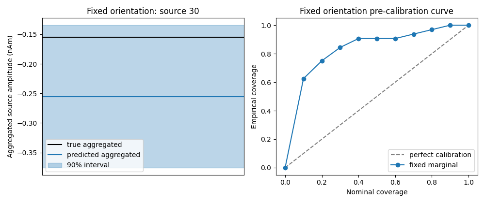
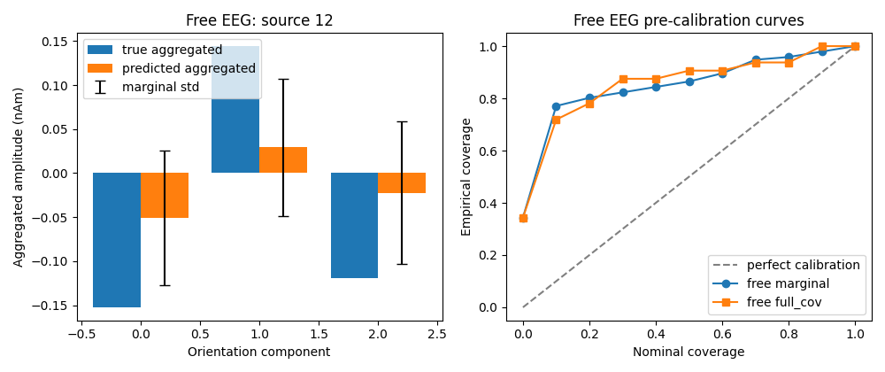

Note
Go to the end to download the full example code.
06. Uncertainty Estimation#
This tutorial mainly explains the UncertaintyEstimator class. It
demonstrates how UncertaintyEstimator converts source reconstruction
outputs into calibration-ready uncertainty representations.
It covers:
fixed-orientation aggregated marginal intervals;
free-orientation EEG aggregated
marginalintervals;free-orientation EEG aggregated
full_covellipsoids;pre-calibration empirical coverage curves before isotonic recalibration.
Scientific motivation#
Source estimation returns posterior means and posterior covariance matrices,
but calibration does not operate on those objects directly. UncertaintyEstimator
turns them into uncertainty representations that can be evaluated against
ground truth.
In the current workflow this means:
fixed orientation uses scalar
posterior_varderived from the diagonal of the covariance;free-orientation EEG can be evaluated either with pooled component-wise
marginalintervals or with local 3Dfull_covellipsoids;the default workflow uses temporally aggregated calibration, so means are averaged over time and covariance is scaled by
1 / T.
import matplotlib.pyplot as plt
import numpy as np
from mne.io.constants import FIFF
from calibrain import (
SensorSimulator,
SourceEstimator,
SourceSimulator,
UncertaintyEstimator,
gamma_map_sflex,
)
RANDOM_SEED = 53
Build a lightweight posterior example#
The tutorial is self-contained: simulate source activity, project it to EEG
sensors, add noise, reconstruct sources with gamma_map_sflex, then pass
the posterior outputs into UncertaintyEstimator.
Units:
source amplitudes are in
nAm;source coordinates for sFLEX are in
m;EEG leadfields are interpreted as
µV / nAm;sensor signals are therefore in
µV.
erp_config = {
"tmin": -0.1,
"tmax": 0.8,
"stim_onset": 0.0,
"sfreq": 100,
"fmin": 2,
"fmax": 8,
"amplitude_distribution": {
"median": 8.0,
"sigma": 0.15,
"clip": [2.0, 20.0],
},
"random_erp_timing": False,
"erp_min_length": 20,
}
nominal_coverages = np.linspace(0.0, 1.0, 11)
uncertainty_estimator = UncertaintyEstimator(nominal_coverages=nominal_coverages)
source_simulator = SourceSimulator(ERP_config=erp_config)
sensor_simulator = SensorSimulator()
times = np.arange(erp_config["tmin"], erp_config["tmax"], 1.0 / erp_config["sfreq"])
rng = np.random.default_rng(RANDOM_SEED)
n_sensors = 16
n_sources = 32
src_coords = rng.normal(scale=0.04, size=(n_sources, 3))
leadfield_fixed = rng.normal(scale=0.03, size=(n_sensors, n_sources))
leadfield_fixed /= np.maximum(
np.linalg.norm(leadfield_fixed, axis=0, keepdims=True),
np.finfo(float).eps,
)
leadfield_fixed *= 0.6
leadfield_free_eeg = rng.normal(scale=0.015, size=(n_sensors, n_sources, 3))
leadfield_free_eeg /= np.maximum(
np.linalg.norm(leadfield_free_eeg, axis=0, keepdims=True),
np.finfo(float).eps,
)
leadfield_free_eeg *= 0.4
sensor_simulator.set_sensor_metadata(
kind=FIFF.FIFFV_EEG_CH,
units=FIFF.FIFF_UNIT_V,
unitmult=FIFF.FIFF_UNITM_MU,
coil_type=FIFF.FIFFV_COIL_EEG,
)
Fixed orientation: from posterior covariance to posterior_var#
For fixed orientation, calibration uses a 1D variance per source. This is the
reduced representation written downstream into aggregated .npz files.
x_true_fixed, active_fixed = source_simulator.simulate(
n_sources=n_sources,
nnz=4,
orientation_type="fixed",
seed=RANDOM_SEED,
)
y_fixed_clean, y_fixed_noisy, fixed_noise, fixed_eta = sensor_simulator.simulate(
x=x_true_fixed,
L=leadfield_fixed,
alpha_SNR=0.7,
sensor_white_noise_std=0.2,
seed=RANDOM_SEED,
)
fixed_noise_var = float(np.var(fixed_noise))
fixed_estimator = SourceEstimator(
solver=gamma_map_sflex,
solver_params={"max_iter": 150, "tol": 1e-7, "sigma": 0.01, "src_coords": src_coords},
noise_var=fixed_noise_var,
n_orient=1,
)
fixed_estimator.fit(leadfield_fixed, y_fixed_noisy)
fixed_result = fixed_estimator.predict()
posterior_var_fixed = uncertainty_estimator.posterior_variance_from_cov(
fixed_result["posterior_cov"]
)
print("fixed posterior_mean shape:", fixed_result["posterior_mean"].shape)
print("fixed posterior_cov shape:", fixed_result["posterior_cov"].shape)
print("fixed posterior_var shape:", posterior_var_fixed.shape)
fixed posterior_mean shape: (32, 90)
fixed posterior_cov shape: (32, 32)
fixed posterior_var shape: (32,)
Fixed orientation: aggregated intervals and pre-calibration curve#
The active workflow uses aggregated calibration. UncertaintyEstimator
averages source time courses over time and scales variance by 1 / T.
fixed_membership = uncertainty_estimator.aggregated_interval_membership(
x_true=x_true_fixed,
x_hat=fixed_result["posterior_mean"],
posterior_var=posterior_var_fixed,
nominal_coverage=0.9,
)
fixed_curve = uncertainty_estimator.calibration_curve_intervals_aggregated(
x_true=x_true_fixed,
x_hat=fixed_result["posterior_mean"],
posterior_var=posterior_var_fixed,
)
print("fixed aggregated empirical coverage at 0.9:", fixed_membership["empirical_coverage"])
print("fixed interval_type:", fixed_curve["interval_type"])
fixed aggregated empirical coverage at 0.9: 1.0
fixed interval_type: marginal
Plot a fixed-orientation aggregated interval example#
The interval is shown for the time-averaged prediction of one active source.
fixed_source_idx = int(np.atleast_1d(active_fixed)[0])
fig, axes = plt.subplots(1, 2, figsize=(10, 4.2))
axes[0].axhline(fixed_membership["x_true_agg"][fixed_source_idx], color="black", label="true aggregated")
axes[0].axhline(fixed_membership["x_hat_agg"][fixed_source_idx], color="C0", label="predicted aggregated")
axes[0].fill_between(
[0, 1],
[fixed_membership["ci_lower"][fixed_source_idx]] * 2,
[fixed_membership["ci_upper"][fixed_source_idx]] * 2,
alpha=0.3,
color="C0",
label="90% interval",
)
axes[0].set(
xlim=(0, 1),
xticks=[],
ylabel="Aggregated source amplitude (nAm)",
title=f"Fixed orientation: source {fixed_source_idx}",
)
axes[0].legend(loc="best")
axes[1].plot([0, 1], [0, 1], "--", color="0.5", label="perfect calibration")
axes[1].plot(
fixed_curve["nominal_coverages"],
fixed_curve["empirical_coverages"],
marker="o",
label="fixed marginal",
)
axes[1].set(
xlabel="Nominal coverage",
ylabel="Empirical coverage",
title="Fixed orientation pre-calibration curve",
)
axes[1].legend(loc="best")
fig.tight_layout()

Free EEG orientation: marginal versus full_cov#
For free-orientation EEG, calibration can use two uncertainty types:
marginal: use only component-wise variances and pool over the three local orientation components;full_cov: use each local3 x 3covariance block and test coverage with 3D ellipsoids.
Both use the same posterior mean and posterior covariance, but they answer slightly different questions.
x_true_free, active_free = source_simulator.simulate(
n_sources=n_sources,
nnz=4,
orientation_type="free",
coil_type=FIFF.FIFFV_COIL_EEG,
seed=RANDOM_SEED + 1,
)
y_free_clean, y_free_noisy, free_noise, free_eta = sensor_simulator.simulate(
x=x_true_free,
L=leadfield_free_eeg,
alpha_SNR=0.7,
sensor_white_noise_std=0.05,
seed=RANDOM_SEED + 1,
)
free_noise_var = float(np.var(free_noise))
free_estimator = SourceEstimator(
solver=gamma_map_sflex,
solver_params={"max_iter": 150, "tol": 1e-7, "sigma": 0.01, "src_coords": src_coords},
noise_var=free_noise_var,
n_orient=3,
)
free_estimator.fit(leadfield_free_eeg, y_free_noisy)
free_result = free_estimator.predict()
print("free EEG posterior_mean shape:", free_result["posterior_mean"].shape)
print("free EEG posterior_mean_reshaped shape:", free_result["posterior_mean_reshaped"].shape)
print("free EEG posterior_cov shape:", free_result["posterior_cov"].shape)
free EEG posterior_mean shape: (96, 90)
free EEG posterior_mean_reshaped shape: (32, 3, 90)
free EEG posterior_cov shape: (96, 96)
Compute aggregated pre-calibration curves#
marginal works with the same full covariance input, but only uses its
diagonal entries source-by-source. full_cov uses the full local 3D blocks.
free_curve_marginal = uncertainty_estimator.calibration_curve_componentwise_eeg_free_aggregated(
x_true=x_true_free,
x_hat=free_result["posterior_mean_reshaped"],
posterior_uncert=free_result["posterior_cov"],
)
free_curve_full_cov = uncertainty_estimator.calibration_curve_ellipsoid_eeg_free_aggregated(
x_true=x_true_free,
x_hat=free_result["posterior_mean_reshaped"],
posterior_cov=free_result["posterior_cov"],
)
free_membership_marginal = uncertainty_estimator.aggregated_componentwise_interval_membership_free(
x_true=x_true_free,
x_hat=free_result["posterior_mean_reshaped"],
posterior_uncert=free_result["posterior_cov"],
nominal_coverage=0.9,
n_orient=3,
)
free_membership_full_cov = uncertainty_estimator.aggregated_ellipsoid_membership_eeg_free(
x_true=x_true_free,
x_hat=free_result["posterior_mean_reshaped"],
posterior_cov=free_result["posterior_cov"],
nominal_coverage=0.9,
)
print("free marginal interval_type:", free_curve_marginal["interval_type"])
print("free full_cov interval_type:", free_curve_full_cov["interval_type"])
print("free marginal empirical coverage at 0.9:", free_membership_marginal["empirical_coverage"])
print("free full_cov empirical coverage at 0.9:", free_membership_full_cov["empirical_coverage"])
free marginal interval_type: marginal
free full_cov interval_type: full_cov
free marginal empirical coverage at 0.9: 0.9791666666666666
free full_cov empirical coverage at 0.9: 1.0
Plot free-orientation uncertainty representations#
The left plot shows time-aggregated component norms for one active source.
The right plot compares aggregated pre-calibration curves for marginal and
full_cov uncertainty.
free_source_idx = int(np.atleast_1d(active_free)[0])
true_free_norm = np.linalg.norm(np.mean(x_true_free, axis=2), axis=1)
est_free_norm = np.linalg.norm(np.mean(free_result["posterior_mean_reshaped"], axis=2), axis=1)
free_component_var_agg = free_membership_marginal["posterior_var_agg"][free_source_idx]
fig, axes = plt.subplots(1, 2, figsize=(10, 4.2))
axes[0].bar(
np.arange(3) - 0.2,
np.mean(x_true_free[free_source_idx], axis=1),
width=0.4,
label="true aggregated",
)
axes[0].bar(
np.arange(3) + 0.2,
np.mean(free_result["posterior_mean_reshaped"][free_source_idx], axis=1),
width=0.4,
label="predicted aggregated",
)
axes[0].errorbar(
np.arange(3) + 0.2,
np.mean(free_result["posterior_mean_reshaped"][free_source_idx], axis=1),
yerr=np.sqrt(free_component_var_agg),
fmt="none",
ecolor="black",
capsize=4,
label="marginal std",
)
axes[0].set(
xlabel="Orientation component",
ylabel="Aggregated amplitude (nAm)",
title=f"Free EEG: source {free_source_idx}",
)
axes[0].legend(loc="best")
axes[1].plot([0, 1], [0, 1], "--", color="0.5", label="perfect calibration")
axes[1].plot(
free_curve_marginal["nominal_coverages"],
free_curve_marginal["empirical_coverages"],
marker="o",
label="free marginal",
)
axes[1].plot(
free_curve_full_cov["nominal_coverages"],
free_curve_full_cov["empirical_coverages"],
marker="s",
label="free full_cov",
)
axes[1].set(
xlabel="Nominal coverage",
ylabel="Empirical coverage",
title="Free EEG pre-calibration curves",
)
axes[1].legend(loc="best")
fig.tight_layout()

Summary#
UncertaintyEstimator is the bridge between posterior covariance and
calibration-ready uncertainty.
In the current workflow:
fixed orientation stores a reduced
posterior_varrepresentation;free EEG with
marginaluses pooled component-wise variances;free EEG with
full_covuses local3 x 3covariance blocks;aggregated calibration is the default mode, so uncertainty is evaluated on time-averaged predictions.
Total running time of the script: (0 minutes 0.539 seconds)